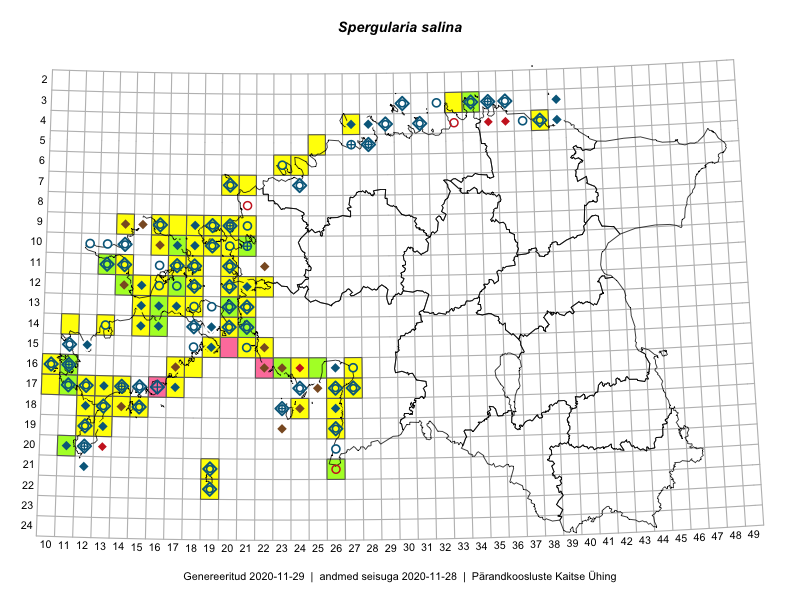

Spergularia salina
Uuendatud: 2016-12-01
Kaardile koondatud taksonid: Spergularia salina (J.Presl & C.Presl) D.Dietr.

Kaart põhineb 61 kirjel, neist vaatlusi 57 ja eksemplare 4.
Kuvatud viited 20 esimesele andmebaasikirjele, ülejäänud PlutoFis
- Toomas Kukk, Eerik Leibak: 2015-08-09: 14-15: ala
- Toomas Kukk, Eerik Leibak: 2015-08-12: 09-17: ala
- Toomas Kukk, Eerik Leibak: 2015-08-10: 09-14: ala
- Ott Luuk: 2014-07-24: 12-20: ala
- Peedu Saar, Elle Roosaluste: 2015-07-12: 13-20: ala
- Toomas Kukk: 2014-06-21: 16-10: ala
- Tiit Hallikma, Toomas Kukk: 2015-08-27: 12-21: ala
- Meeli Mesipuu: 2015-07-09: 13-16: ala
- Meeli Mesipuu: 2015-07-09: 13-16: GPS punkt
- Eeva-Maria Jeletsky, Tarmo Niitla: 2015-06-28: 11-14: ala
- Oliver Parrest: 2015-07-01: 19-13: ala
- Eeva-Maria Jeletsky, Tarmo Niitla: 2015-08-12: 21-38: ala
- Eeva-Maria Jeletsky, Tarmo Niitla: 2015-08-05: 23-40: ala
- Maret Gerz, Leena Gerz: 2015-08-15: 15-22: ala
- Mari Reitalu, Sirje Azarov, Oliver Parrest: 2015-08-02: 18-12: ala
- Mari Reitalu, Oliver Parrest: 2015-08-04: 17-10: ala
- Mari Reitalu, Triin Reitalu: 2015-07-22: 17-12: ala
- Triin Reitalu, Mari Reitalu: 2015-08-09: 16-11: ala
- Mari Reitalu, Triin Reitalu: 2015-08-05: 17-11: ala
- Sirje Azarov, Mari Reitalu: 2015-08-22: 16-10: ala